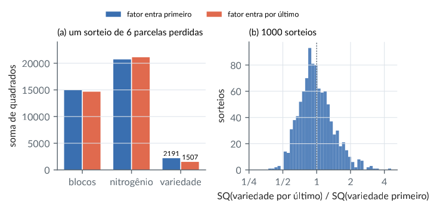
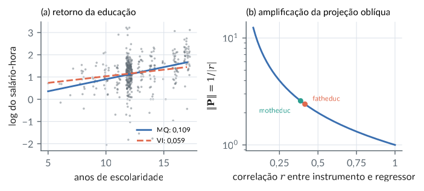
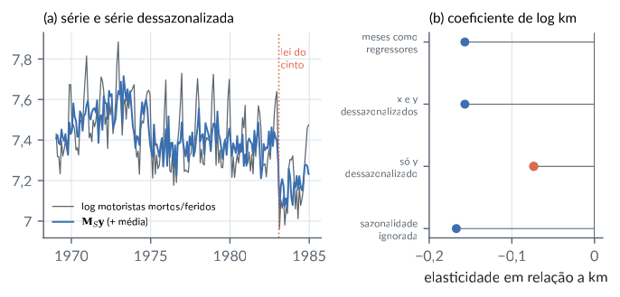
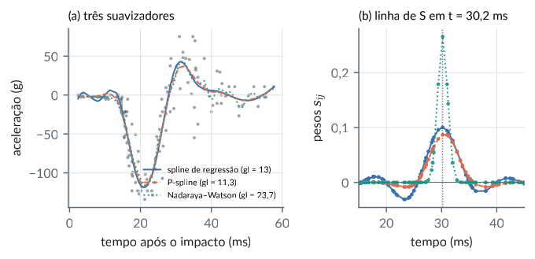
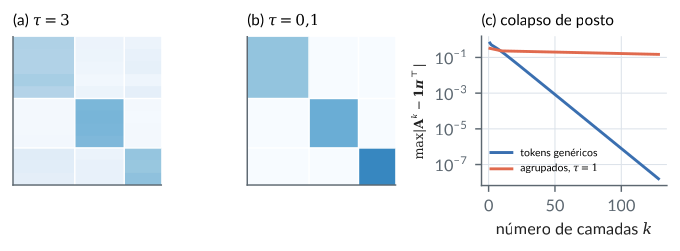
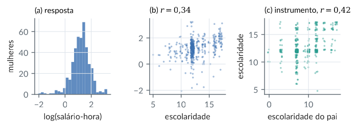
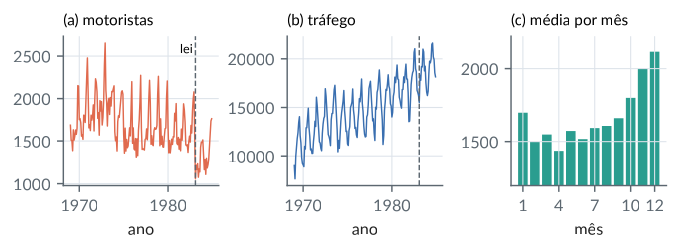
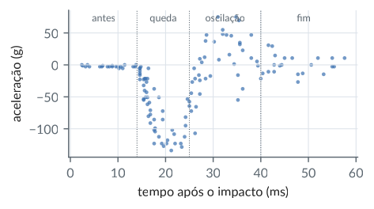

5. Matrizes idempotentes e projeções
Material reprodutível do Capítulo 5 do livro.
Exemplos
Matrizes idempotentes: posto = traço, identidade de posto, potências
R/cap05/01_idempotentes.R
# Cap. 5: Matrizes idempotentes: posto = traço, identidade de posto, potências
posto <- function(M) qr(M, tol = 1e-10)$rank
tr <- function(M) sum(diag(M))
# Três idempotentes: oblíqua 2 x 2, centragem e A G (com G inversa generalizada de A)
A1 <- matrix(c(1, 1,
0, 0), 2, byrow = TRUE)
C5 <- diag(5) - matrix(1 / 5, 5, 5)
A <- matrix(c(1, 2, 0, 1, 2, 4, 1, 1, 3, 6, 1, 2), 3, byrow = TRUE)
G <- matrix(0, 4, 3); G[c(1, 3), 1:2] <- solve(A[1:2, c(1, 3)]) # submatriz (Cap. 4)
lista <- list(obliqua = A1, centragem = C5, AG = A %*% G)
t(sapply(lista, function(M) c(erro_idemp = max(abs(M %*% M - M)), simetrica = isSymmetric(M),
posto = posto(M), traco = tr(M))))
# Construção de uma idempotente de posto r: A = B (C B)^{-1} C
set.seed(5)
n <- 6; r <- 2
B <- matrix(rnorm(n * r), n); C <- matrix(rnorm(r * n), r)
P <- B %*% solve(C %*% B) %*% C
c(erro_idemp = max(abs(P %*% P - P)), posto = posto(P), traco = tr(P),
posto_I_menos_P = posto(diag(n) - P))
# Identidade posto(M) + posto(I - M) = n + posto(M - M^2) para M qualquer
M <- P + 0.1 * matrix(rnorm(n * n), n)
c(esquerda = posto(M) + posto(diag(n) - M), direita = n + posto(M - M %*% M))
# Limite de potências de uma matriz de transição: L = 1 pi' é idempotente
Pm <- matrix(c(0.9, 0.1,
0.3, 0.7), 2, byrow = TRUE)
L <- diag(2); for (k in 1:200) L <- L %*% Pm
L
c(erro_idemp = max(abs(L %*% L - L)), erro_PL = max(abs(Pm %*% L - L)), posto = posto(L))Saída
erro_idemp simetrica posto traco
obliqua 0.000000e+00 0 1 1
centragem 2.220446e-16 1 4 4
AG 0.000000e+00 0 2 2
erro_idemp posto traco posto_I_menos_P
8.881784e-16 2.000000e+00 2.000000e+00 4.000000e+00
esquerda direita
12 12
[,1] [,2]
[1,] 0.75 0.25
[2,] 0.75 0.25
erro_idemp erro_PL posto
5.551115e-16 1.110223e-16 1.000000e+00python/cap05/01_idempotentes.py
"""Cap. 5: Matrizes idempotentes: posto = traço, identidade de posto, potências."""
import numpy as np
posto = lambda M: np.linalg.matrix_rank(M, tol=1e-10)
A1 = np.array([[1.0, 1.0], [0.0, 0.0]])
C5 = np.eye(5) - np.full((5, 5), 1 / 5)
A = np.array([[1, 2, 0, 1], [2, 4, 1, 1], [3, 6, 1, 2]], float)
G = np.zeros((4, 3)); G[np.ix_([0, 2], [0, 1])] = np.linalg.inv(A[np.ix_([0, 1], [0, 2])])
for nome, M in {"oblíqua": A1, "centragem": C5, "AG": A @ G}.items():
print(f"{nome:10s} erro_idemp={np.abs(M @ M - M).max():.1e} simétrica={np.allclose(M, M.T)!s:5s} "
f"posto={posto(M)} traço={np.trace(M):.0f}")
rng = np.random.default_rng(5)
n, r = 6, 2
B = rng.normal(size=(n, r)); C = rng.normal(size=(r, n))
P = B @ np.linalg.solve(C @ B, C) # B (C B)^{-1} C
print("idempotente construída:", posto(P), round(np.trace(P), 10), posto(np.eye(n) - P))
M = P + 0.1 * rng.normal(size=(n, n))
print("identidade de posto:", posto(M) + posto(np.eye(n) - M), "=", n + posto(M - M @ M))
Pm = np.array([[0.9, 0.1], [0.3, 0.7]])
L = np.linalg.matrix_power(Pm, 200)
print(L.round(6), "\nerro L^2 - L:", np.abs(L @ L - L).max(), " posto:", posto(L))Saída
oblíqua erro_idemp=0.0e+00 simétrica=False posto=1 traço=1
centragem erro_idemp=2.2e-16 simétrica=True posto=4 traço=4
AG erro_idemp=0.0e+00 simétrica=False posto=2 traço=2
idempotente construída: 2 2.0 4
identidade de posto: 12 = 12
[[0.75 0.25]
[0.75 0.25]]
erro L^2 - L: 3.3306690738754696e-16 posto: 1Projeções oblíquas e ortogonais em R^3
R/cap05/02_projecoes.R
# Cap. 5: Projeções oblíquas e ortogonais em R^3
norma <- function(v) sqrt(sum(v^2))
# Projeção sobre U = C(B) (o plano z = 0) ao longo de W = ger{w}, w = (1, 1, 1)
B <- cbind(c(1, 0, 0), c(0, 1, 0))
w <- c(1, 1, 1)
C <- MASS::Null(w) # colunas: base de W^perp, logo N(C') = W
P <- B %*% solve(t(C) %*% B) %*% t(C) # P = B (C'B)^{-1} C'
round(P, 4)
c(erro_idemp = max(abs(P %*% P - P)), Pw = norma(P %*% w), simetrica = isSymmetric(P))
y <- c(0, 0, 1)
P %*% y # componente em U de y = (0,0,1)
c(norma_y = norma(y), norma_Py = norma(P %*% y), norma_P = svd(P)$d[1])
# Projeção ortogonal sobre o mesmo plano: simétrica e contração
Po <- B %*% solve(crossprod(B), t(B))
c(norma_Po_y = norma(Po %*% y), norma_Po = svd(Po)$d[1])
# Três fórmulas para a projeção ortogonal sobre C(X), com X de posto incompleto
set.seed(2)
X <- cbind(1, rnorm(8), rnorm(8)); X <- cbind(X, X[, 2] + X[, 3]) # 8 x 4, posto 3
H1 <- X %*% MASS::ginv(crossprod(X)) %*% t(X)
q <- qr(X); Q <- qr.Q(q)[, 1:q$rank]
H2 <- Q %*% t(Q)
H3 <- X %*% MASS::ginv(X)
c(H1_H2 = max(abs(H1 - H2)), H1_H3 = max(abs(H1 - H3)), traco = sum(diag(H1)))
# Projeção ortogonal no produto interno <u, v>_W = u' W v
W <- diag(1:8)
PW <- X %*% MASS::ginv(t(X) %*% W %*% X) %*% t(X) %*% W
c(erro_idemp = max(abs(PW %*% PW - PW)), assimetria_PW = max(abs(PW - t(PW))),
assimetria_WPW = max(abs(W %*% PW - t(W %*% PW))))Saída
[,1] [,2] [,3]
[1,] 1 0 -1
[2,] 0 1 -1
[3,] 0 0 0
erro_idemp Pw simetrica
5.551115e-17 2.220446e-16 0.000000e+00
[,1]
[1,] -1
[2,] -1
[3,] 0
norma_y norma_Py norma_P
1.000000 1.414214 1.732051
norma_Po_y norma_Po
0 1
H1_H2 H1_H3 traco
3.608225e-16 3.330669e-16 3.000000e+00
erro_idemp assimetria_PW assimetria_WPW
4.996004e-16 4.870947e-01 3.330669e-15python/cap05/02_projecoes.py
"""Cap. 5: Projeções oblíquas e ortogonais em R^3."""
import numpy as np
from scipy.linalg import null_space, qr
B = np.array([[1.0, 0], [0, 1], [0, 0]])
w = np.ones(3)
C = null_space(w[None, :]) # N(C') = ger{w}
P = B @ np.linalg.solve(C.T @ B, C.T)
print(P.round(4) + 0.0)
y = np.array([0.0, 0, 1])
print("P w =", (P @ w).round(12) + 0.0, " P y =", P @ y + 0.0)
print(f"|y| = 1, |Py| = {np.linalg.norm(P @ y):.4f}, |P| = {np.linalg.norm(P, 2):.4f}")
Po = B @ np.linalg.solve(B.T @ B, B.T)
print(f"ortogonal: |Po y| = {np.linalg.norm(Po @ y):.1f}, |Po| = {np.linalg.norm(Po, 2):.1f}")
rng = np.random.default_rng(2)
X = np.column_stack([np.ones(8), rng.normal(size=(8, 2))]); X = np.column_stack([X, X[:, 1] + X[:, 2]])
H1 = X @ np.linalg.pinv(X.T @ X) @ X.T
Q, R, piv = qr(X, mode="economic", pivoting=True)
H2 = Q[:, :3] @ Q[:, :3].T
H3 = X @ np.linalg.pinv(X)
print("diferenças entre fórmulas:", np.abs(H1 - H2).max(), np.abs(H1 - H3).max(), " traço:", np.trace(H1).round(10))
W = np.diag(np.arange(1.0, 9))
PW = X @ np.linalg.pinv(X.T @ W @ X) @ X.T @ W
print("P_W idempotente:", np.allclose(PW @ PW, PW), " simétrica:", np.allclose(PW, PW.T),
" W P_W simétrica:", np.allclose(W @ PW, (W @ PW).T))Saída
[[ 1. 0. -1.]
[ 0. 1. -1.]
[ 0. 0. 0.]]
P w = [0. 0. 0.] P y = [-1. -1. 0.]
|y| = 1, |Py| = 1.4142, |P| = 1.7321
ortogonal: |Po y| = 0.0, |Po| = 1.0
diferenças entre fórmulas: 9.43689570931383e-16 6.591949208711867e-16 traço: 3.0
P_W idempotente: True simétrica: False W P_W simétrica: TrueSubespaços encaixados, somas de quadrados e restrições (dados wage1)
R/cap05/03_encaixados.R
# Cap. 5: Subespaços encaixados, somas de quadrados e restrições (dados wage1)
w <- read.csv(file.path("dados", "wage1.csv"))
y <- log(w$wage); n <- length(y)
proj <- function(X) X %*% solve(crossprod(X), t(X)) # posto coluna completo
sq <- function(v) sum(v^2)
X0 <- matrix(1, n) # só o intercepto
X1 <- cbind(1, w$educ) # + escolaridade
X2 <- cbind(X1, w$exper, w$tenure) # + experiência e permanência
P0 <- proj(X0); P1 <- proj(X1); P2 <- proj(X2)
c(P2P1_P1 = max(abs(P2 %*% P1 - P1)), P1P2_P1 = max(abs(P1 %*% P2 - P1)),
P2_menos_P1_idemp = max(abs((P2 - P1) %*% (P2 - P1) - (P2 - P1))))
# Decomposição ortogonal de y - ybar 1 e somas de quadrados sequenciais
partes <- list(educ = (P1 - P0) %*% y, exper_tenure = (P2 - P1) %*% y,
residuo = y - P2 %*% y)
data.frame(gl = sapply(list(P1 - P0, P2 - P1, diag(n) - P2), function(M) round(sum(diag(M)))),
SQ = sapply(partes, sq))
c(soma = sum(sapply(partes, sq)), SQ_total = sq(y - mean(y)))
anova(lm(y ~ educ + exper + tenure, data = w))
# P_[X1 X2] = P_X1 + P_{M1 X2}, com M1 = I - P_X1
Z <- (diag(n) - P1) %*% cbind(w$exper, w$tenure)
max(abs(P2 - (P1 + proj(Z))))
# Restrição K b = 0 (exper e tenure com o mesmo coeficiente): P_X - P_S = P_{X (X'X)^{-1} K'}
K <- matrix(c(0, 0, 1, -1), 1)
XR <- cbind(1, w$educ, w$exper + w$tenure) # C(XR) = {X b : K b = 0}
PR <- proj(XR)
U <- X2 %*% solve(crossprod(X2), t(K))
c(erro = max(abs(P2 - PR - proj(U))), SQ_restricao = sq((P2 - PR) %*% y))
anova(lm(y ~ educ + I(exper + tenure), data = w), lm(y ~ educ + exper + tenure, data = w))Saída
P2P1_P1 P1P2_P1 P2_menos_P1_idemp
7.979728e-17 7.285839e-17 4.857226e-17
gl SQ
educ 1 27.56063
exper_tenure 2 19.31355
residuo 522 101.45557
soma SQ_total
148.3297 148.3297
Analysis of Variance Table
Response: y
Df Sum Sq Mean Sq F value Pr(>F)
educ 1 27.561 27.5606 141.802 < 2.2e-16 ***
exper 1 9.424 9.4244 48.490 1.002e-11 ***
tenure 1 9.889 9.8891 50.881 3.294e-12 ***
Residuals 522 101.456 0.1944
---
Signif. codes: 0 ‘***’ 0.001 ‘**’ 0.01 ‘*’ 0.05 ‘.’ 0.1 ‘ ’ 1
[1] 3.95517e-16
erro SQ_restricao
9.454243e-17 3.489044e+00
Analysis of Variance Table
Model 1: y ~ educ + I(exper + tenure)
Model 2: y ~ educ + exper + tenure
Res.Df RSS Df Sum of Sq F Pr(>F)
1 523 104.94
2 522 101.46 1 3.489 17.951 2.679e-05 ***
---
Signif. codes: 0 ‘***’ 0.001 ‘**’ 0.01 ‘*’ 0.05 ‘.’ 0.1 ‘ ’ 1python/cap05/03_encaixados.py
"""Cap. 5: Subespaços encaixados, somas de quadrados e restrições (dados wage1)."""
from pathlib import Path
import numpy as np
import pandas as pd
w = pd.read_csv(Path(__file__).resolve().parents[2] / "dados" / "wage1.csv")
y = np.log(w["wage"].to_numpy()); n = len(y)
proj = lambda X: X @ np.linalg.solve(X.T @ X, X.T)
sq = lambda v: float(v @ v)
um = np.ones((n, 1))
X1 = np.column_stack([um, w["educ"]])
X2 = np.column_stack([X1, w["exper"], w["tenure"]])
P0, P1, P2 = proj(um), proj(X1), proj(X2)
print("P2 P1 = P1:", np.allclose(P2 @ P1, P1), " P2 - P1 idempotente:", np.allclose((P2 - P1) @ (P2 - P1), P2 - P1))
for nome, M in {"educ": P1 - P0, "exper+tenure": P2 - P1, "resíduo": np.eye(n) - P2}.items():
print(f"{nome:13s} gl = {np.trace(M):5.0f} SQ = {sq(M @ y):9.4f}")
print(f"SQ total = {sq(y - y.mean()):.4f}")
Z = (np.eye(n) - P1) @ np.column_stack([w["exper"], w["tenure"]])
print("P_[X1 X2] = P1 + P_{M1 X2}:", np.abs(P2 - P1 - proj(Z)).max())
K = np.array([[0.0, 0, 1, -1]])
PR = proj(np.column_stack([um, w["educ"], w["exper"] + w["tenure"]]))
U = X2 @ np.linalg.solve(X2.T @ X2, K.T)
print("P_X - P_S = P_U:", np.abs(P2 - PR - proj(U)).max(), " SQ da restrição =", round(sq((P2 - PR) @ y), 4))Saída
P2 P1 = P1: True P2 - P1 idempotente: True
educ gl = 1 SQ = 27.5606
exper+tenure gl = 2 SQ = 19.3135
resíduo gl = 522 SQ = 101.4556
SQ total = 148.3297
P_[X1 X2] = P1 + P_{M1 X2}: 2.0122792321330962e-16
P_X - P_S = P_U: 1.2836953722228372e-16 SQ da restrição = 3.489A diagonal da matriz chapéu (alavancas) nos dados wage1
R/cap05/04_alavancas.R
# Cap. 5: A diagonal da matriz chapéu (alavancas) nos dados wage1
w <- read.csv(file.path("dados", "wage1.csv"))
X <- cbind(1, w$educ, w$exper, w$tenure); y <- log(w$wage)
n <- nrow(X); p <- ncol(X)
H <- X %*% solve(crossprod(X), t(X)); h <- diag(H)
c(soma = sum(h), p = p, min = min(h), um_sobre_n = 1 / n, max = max(h), media = mean(h))
max(abs(h - hatvalues(lm(y ~ educ + exper + tenure, data = w))))
# h_ii = 1/n + distância de Mahalanobis (ao quadrado) / (n - 1)
Zc <- scale(X[, -1], scale = FALSE)
S <- crossprod(Zc) / (n - 1)
d2 <- rowSums((Zc %*% solve(S)) * Zc)
max(abs(h - (1 / n + d2 / (n - 1))))
# h_ii (1 - h_ii) = soma_{j != i} h_ij^2 e a derivada de yhat_i em relação a y_i
i <- which.max(h)
c(i = i, h_ii = h[i], lado_esq = h[i] * (1 - h[i]), lado_dir = sum(H[i, -i]^2))
w[i, c("wage", "educ", "exper", "tenure")]
y2 <- y; y2[i] <- y2[i] + 1
c(variacao_yhat_i = drop(H[i, ] %*% y2 - H[i, ] %*% y))
quantile(h, c(0.5, 0.9, 0.99))
c(acima_2p_n = sum(h > 2 * p / n), acima_3p_n = sum(h > 3 * p / n))Saída
soma p min um_sobre_n max media
4.000000000 4.000000000 0.001982721 0.001901141 0.057705997 0.007604563
[1] 8.109832e-16
[1] 2.012279e-16
i h_ii lado_esq lado_dir
265.00000000 0.05770600 0.05437601 0.05437601
wage educ exper tenure
265 8.75 12 47 44
variacao_yhat_i
0.057706
50% 90% 99%
0.005514651 0.015377632 0.038873902
acima_2p_n acima_3p_n
54 18python/cap05/04_alavancas.py
"""Cap. 5: A diagonal da matriz chapéu (alavancas) nos dados wage1."""
from pathlib import Path
import numpy as np
import pandas as pd
w = pd.read_csv(Path(__file__).resolve().parents[2] / "dados" / "wage1.csv")
X = np.column_stack([np.ones(len(w)), w[["educ", "exper", "tenure"]]]); y = np.log(w["wage"].to_numpy())
n, p = X.shape
H = X @ np.linalg.solve(X.T @ X, X.T); h = np.diag(H)
print(f"soma = {h.sum():.4f}, mín = {h.min():.6f} (1/n = {1 / n:.6f}), máx = {h.max():.6f}")
Zc = X[:, 1:] - X[:, 1:].mean(0)
S = Zc.T @ Zc / (n - 1)
d2 = np.einsum("ij,ij->i", Zc @ np.linalg.inv(S), Zc)
print("h = 1/n + d2/(n-1):", np.abs(h - (1 / n + d2 / (n - 1))).max())
i = h.argmax()
print(f"obs. {i + 1}: h_ii = {h[i]:.6f}, h(1-h) = {h[i] * (1 - h[i]):.6f}, soma h_ij^2 = {(np.delete(H[i], i) ** 2).sum():.6f}")
print(w.loc[i, ["wage", "educ", "exper", "tenure"]].to_dict())
print("acima de 2p/n:", (h > 2 * p / n).sum(), " acima de 3p/n:", (h > 3 * p / n).sum())Saída
soma = 4.0000, mín = 0.001983 (1/n = 0.001901), máx = 0.057706
h = 1/n + d2/(n-1): 7.632783294297951e-17
obs. 265: h_ii = 0.057706, h(1-h) = 0.054376, soma h_ij^2 = 0.054376
{'wage': 8.75, 'educ': 12.0, 'exper': 47.0, 'tenure': 44.0}
acima de 2p/n: 54 acima de 3p/n: 18Somas de quadrados como projeções no experimento de aveia
R/cap05/05_aveia_somas.R
# Cap. 5: Somas de quadrados como projeções no experimento de aveia
aveia <- read.csv(file.path("dados", "yates_oats.csv"))
proj <- function(X) { q <- qr(X); Q <- qr.Q(q)[, seq_len(q$rank), drop = FALSE]; Q %*% t(Q) }
ind <- function(f) model.matrix(~ factor(f) - 1)
# Projeções sobre os efeitos centrados de cada fator: P_F = P_{C(indicadoras)} - J/n
pecas <- function(d) {
n <- nrow(d); J <- matrix(1 / n, n, n)
list(B = proj(ind(d$block)) - J, N = proj(ind(d$nitro)) - J, V = proj(ind(d$gen)) - J, J = J)
}
p <- pecas(aveia); y <- aveia$yield; n <- length(y)
comuta <- function(A, B) max(abs(A %*% B))
c(BN = comuta(p$B, p$N), BV = comuta(p$B, p$V), NV = comuta(p$N, p$V))
R <- diag(n) - p$J - p$B - p$N - p$V # resíduo
c(erro_idemp_R = max(abs(R %*% R - R)))
sq <- function(P, y) drop(t(y) %*% P %*% y)
data.frame(gl = sapply(list(p$B, p$N, p$V, R), function(M) round(sum(diag(M)))),
SQ = sapply(list(p$B, p$N, p$V, R), sq, y = y), row.names = c("blocos", "nitrogênio", "variedade", "resíduo"))
# Seis subparcelas perdidas: as projeções deixam de ser ortogonais
source(file.path("R", "comum", "gerador.R")) # mesmos sorteios que o Python
g <- gerador(5)
sorteia <- function() sort(order(g$unif(n))[1:6]) # 6 subparcelas ao acaso
perdidas <- sorteia(); perdidas
a2 <- aveia[-perdidas, ]; p2 <- pecas(a2)
c(BN = comuta(p2$B, p2$N), BV = comuta(p2$B, p2$V), NV = comuta(p2$N, p2$V))
# Soma de quadrados da variedade conforme a ordem de entrada no modelo
sq_var <- function(d) {
y2 <- d$yield; um <- rep(1, nrow(d))
B <- ind(d$block); N <- ind(d$nitro); V <- ind(d$gen)
P0 <- proj(cbind(um)); PB <- proj(cbind(um, B)); PN <- proj(cbind(um, N)); PBN <- proj(cbind(um, B, N))
Pc <- proj(cbind(um, B, N, V))
sq_res <- sq(diag(nrow(d)) - Pc, y2); gl_res <- nrow(d) - 11
ss <- c(V_primeiro = sq(proj(cbind(um, V)) - P0, y2), V_apos_B = sq(proj(cbind(um, B, V)) - PB, y2),
V_apos_N = sq(proj(cbind(um, N, V)) - PN, y2), V_por_ultimo = sq(Pc - PBN, y2))
p <- pf((ss[c(1, 4)] / 2) / (sq_res / gl_res), 2, gl_res, lower.tail = FALSE)
c(ss, p_primeiro = p[[1]], p_ultimo = p[[2]])
}
round(sq_var(a2), 4)
# Repetição: 1000 sorteios de 6 subparcelas perdidas
R <- t(replicate(1000, sq_var(aveia[-sorteia(), ])))
razao <- R[, "V_por_ultimo"] / R[, "V_primeiro"]
round(quantile(razao, c(0, 0.05, 0.25, 0.5, 0.75, 0.95, 1)), 3)
c(muda_mais_de_20pc = mean(razao < 0.8 | razao > 1.25))
c(muda_conclusao = mean((R[, "p_primeiro"] < 0.05) != (R[, "p_ultimo"] < 0.05)),
p_primeiro_signif = mean(R[, "p_primeiro"] < 0.05), p_ultimo_signif = mean(R[, "p_ultimo"] < 0.05))Saída
BN BV NV
3.252607e-18 1.843144e-18 3.903128e-18
erro_idemp_R
2.109424e-15
gl SQ
blocos 5 15875.278
nitrogênio 3 20020.500
variedade 2 1786.361
resíduo 61 14303.806
[1] 1 3 14 32 41 58
BN BV NV
0.003787879 0.003293808 0.003246753
V_primeiro V_apos_B V_apos_N V_por_ultimo p_primeiro p_ultimo
2191.2276 1440.6605 2188.7210 1507.2353 0.0102 0.0395
0% 5% 25% 50% 75% 95% 100%
0.371 0.599 0.787 0.954 1.215 1.835 4.593
muda_mais_de_20pc
0.499
muda_conclusao p_primeiro_signif p_ultimo_signif
0.282 0.614 0.632python/cap05/05_aveia_somas.py
"""Cap. 5: Somas de quadrados como projeções no experimento de aveia."""
import sys
from pathlib import Path
import numpy as np
import pandas as pd
from scipy.linalg import qr
from scipy.stats import f as f_dist
sys.path.insert(0, str(Path(__file__).resolve().parents[1]))
from comum.gerador import Gerador # noqa: E402
aveia = pd.read_csv(Path(__file__).resolve().parents[2] / "dados" / "yates_oats.csv")
def proj(X):
"""Projeção ortogonal sobre C(X), com X possivelmente de posto incompleto (QR com pivotamento)."""
Q, R, _ = qr(X, mode="economic", pivoting=True)
k = (np.abs(np.diag(R)) > 1e-10 * np.abs(R[0, 0])).sum()
return Q[:, :k] @ Q[:, :k].T
ind = lambda s: pd.get_dummies(s).to_numpy(float)
sq = lambda P, y: float(y @ P @ y)
def pecas(d):
n = len(d); J = np.full((n, n), 1 / n)
return {"B": proj(ind(d["block"])) - J, "N": proj(ind(d["nitro"])) - J, "V": proj(ind(d["gen"])) - J, "J": J}
y = aveia["yield"].to_numpy(float); n = len(y); p = pecas(aveia)
print("P_B P_N, P_B P_V, P_N P_V:", [float(np.abs(p[a] @ p[b]).max().round(15)) for a, b in ("BN", "BV", "NV")])
R = np.eye(n) - p["J"] - p["B"] - p["N"] - p["V"]
for nome, M in {"blocos": p["B"], "nitrogênio": p["N"], "variedade": p["V"], "resíduo": R}.items():
print(f"{nome:11s} gl = {np.trace(M):3.0f} SQ = {sq(M, y):10.3f}")
g = Gerador(5) # mesmos sorteios que o R
sorteia = lambda: np.sort(np.argsort(g.unif(n))[:6]) # 6 subparcelas ao acaso
perdidas = sorteia()
print("perdidas:", perdidas + 1)
def sq_var(d):
y2 = d["yield"].to_numpy(float); um = np.ones((len(d), 1))
B, N, V = ind(d["block"]), ind(d["nitro"]), ind(d["gen"])
P = lambda *M: proj(np.column_stack((um,) + M))
Pc = P(B, N, V); gl = len(d) - 11
sq_res = sq(np.eye(len(d)) - Pc, y2)
ss = {"V primeiro": sq(P(V) - P(), y2), "V após B": sq(P(B, V) - P(B), y2),
"V após N": sq(P(N, V) - P(N), y2), "V por último": sq(Pc - P(B, N), y2)}
pv = [f_dist.sf(ss[k] / 2 / (sq_res / gl), 2, gl) for k in ("V primeiro", "V por último")]
return ss, pv
ss, pv = sq_var(aveia.drop(index=perdidas))
for k, v in ss.items():
print(f"{k:13s} SQ = {v:9.3f}")
print(f"valor-p: entrando primeiro {pv[0]:.4f}, por último {pv[1]:.4f}")
res = [sq_var(aveia.drop(index=sorteia())) for _ in range(1000)]
razao = np.array([r[0]["V por último"] / r[0]["V primeiro"] for r in res])
pv = np.array([r[1] for r in res])
print("razão último/primeiro, quantis 0, 5, 50, 95, 100%:", np.quantile(razao, [0, .05, .5, .95, 1]).round(3))
print("fração em que a conclusão a 5% muda:", np.mean((pv[:, 0] < 0.05) != (pv[:, 1] < 0.05)))Saída
P_B P_N, P_B P_V, P_N P_V: [0.0, 0.0, 0.0]
blocos gl = 5 SQ = 15875.278
nitrogênio gl = 3 SQ = 20020.500
variedade gl = 2 SQ = 1786.361
resíduo gl = 61 SQ = 14303.806
perdidas: [ 1 3 14 32 41 58]
V primeiro SQ = 2191.228
V após B SQ = 1440.660
V após N SQ = 2188.721
V por último SQ = 1507.235
valor-p: entrando primeiro 0.0102, por último 0.0395
razão último/primeiro, quantis 0, 5, 50, 95, 100%: [0.371 0.599 0.954 1.835 4.593]
fração em que a conclusão a 5% muda: 0.282Figura: aveia somas
python/cap05/fig_cap05.py
def fig_aveia():
aveia = pd.read_csv(DADOS / "yates_oats.csv"); n = len(aveia)
g = Gerador(5) # mesmos sorteios do script 05
sorteia = lambda: np.sort(np.argsort(g.unif(n))[:6])
fatores = {"blocos": "block", "nitrogênio": "nitro", "variedade": "gen"}
def sq_primeiro_ultimo(d):
y = d["yield"].to_numpy(float); um = np.ones((len(d), 1))
X = {f: ind(d[c]) for f, c in fatores.items()}
res = {}
for f in fatores:
outros = np.column_stack([um] + [X[h] for h in fatores if h != f])
pri = y @ (proj(np.column_stack([um, X[f]])) - proj(um)) @ y
ult = y @ (proj(np.column_stack([outros, X[f]])) - proj(outros)) @ y
res[f] = (pri, ult)
return res
exemplo = sq_primeiro_ultimo(aveia.drop(index=sorteia()))
razao = []
for _ in range(1000):
r = sq_primeiro_ultimo(aveia.drop(index=sorteia()))["variedade"]
razao.append(r[1] / r[0])
fig, (a1, a2) = plt.subplots(1, 2, figsize=(LARG, 2.5))
pos = np.arange(3)
a1.bar(pos - 0.19, [v[0] for v in exemplo.values()], 0.36, color=CATEG[0], label="fator entra primeiro")
a1.bar(pos + 0.19, [v[1] for v in exemplo.values()], 0.36, color=CATEG[1], label="fator entra por último")
a1.set_xticks(pos, list(exemplo.keys()))
a1.grid(axis="x", visible=False)
a, b = exemplo["variedade"]
a1.text(2 - 0.19, a + 400, f"{a:.0f}", ha="center", fontsize=6.5)
a1.text(2 + 0.19, b + 400, f"{b:.0f}", ha="center", fontsize=6.5)
a1.set_ylim(0, 24000); a1.set_ylabel("soma de quadrados")
h, l = a1.get_legend_handles_labels()
fig.legend(h, l, fontsize=7, loc="upper center", ncol=2, bbox_to_anchor=(0.5, 1.07))
a1.set_title("(a) um sorteio de 6 parcelas perdidas", fontsize=8.5, loc="left")
a2.hist(np.log2(razao), bins=40, color=CATEG[0], alpha=0.85)
a2.axvline(0, color=COR["cinza"], ls=":", lw=0.9)
a2.set_xticks([-2, -1, 0, 1, 2], ["1/4", "1/2", "1", "2", "4"])
a2.set_xlabel("SQ(variedade por último) / SQ(variedade primeiro)")
a2.set_ylabel("sorteios")
a2.set_title("(b) 1000 sorteios", fontsize=8.5, loc="left")
fig.tight_layout()
salvar(fig, CAP, "aveia_somas")Trecho de python/cap05/fig_cap05.py, que traz também as importações e o estilo.

Variáveis instrumentais como projeção oblíqua (dados de Mroz)
R/cap05/06_vi_mroz.R
# Cap. 5: Variáveis instrumentais como projeção oblíqua (dados de Mroz)
m <- read.csv(file.path("dados", "mroz.csv"))
y <- m$lwage; n <- length(y)
X <- cbind(1, educ = m$educ); Z <- cbind(1, fatheduc = m$fatheduc)
P <- X %*% solve(crossprod(Z, X)) %*% t(Z) # projeção sobre C(X) ao longo de C(Z)^perp
H <- X %*% solve(crossprod(X)) %*% t(X) # projeção ortogonal sobre C(X)
c(erro_idemp = max(abs(P %*% P - P)), assimetria = max(abs(P - t(P))), traco = sum(diag(P)))
b_mq <- solve(crossprod(X), crossprod(X, y))
b_vi <- solve(crossprod(Z, X), crossprod(Z, y))
cbind(MQ = drop(b_mq), VI = drop(b_vi))
e_vi <- y - P %*% y
c(Z_e = max(abs(crossprod(Z, e_vi))), X_e = max(abs(crossprod(X, e_vi))))
# Norma da projeção oblíqua: 1 / |cos| do ângulo entre educ e fatheduc centrados
r <- cor(m$educ, m$fatheduc)
c(norma_P = svd(P)$d[1], um_sobre_r = 1 / abs(r), r = r)
# Erros-padrão (homocedásticos) de MQ e de VI: a razão é aproximadamente 1/|r|
s_mq <- sqrt(sum((y - H %*% y)^2) / (n - 2)); s_vi <- sqrt(sum(e_vi^2) / (n - 2))
ep_mq <- s_mq * sqrt(solve(crossprod(X))[2, 2])
A <- solve(crossprod(Z, X)); ep_vi <- s_vi * sqrt((A %*% crossprod(Z) %*% t(A))[2, 2])
c(ep_mq = ep_mq, ep_vi = ep_vi, razao = ep_vi / ep_mq)
# Mínimos quadrados em dois estágios com dois instrumentos
Z2 <- cbind(1, m$fatheduc, m$motheduc)
PZ <- Z2 %*% solve(crossprod(Z2), t(Z2))
P2 <- X %*% solve(t(X) %*% PZ %*% X) %*% t(X) %*% PZ
c(erro_idemp = max(abs(P2 %*% P2 - P2)), norma_P2 = svd(P2)$d[1])
drop(solve(t(X) %*% PZ %*% X, t(X) %*% PZ %*% y))Saída
erro_idemp assimetria traco
2.567391e-16 5.380413e-02 2.000000e+00
MQ VI
-0.1851968 0.44110341
educ 0.1086487 0.05917348
Z_e X_e
8.726353e-12 1.103394e+02
norma_P um_sobre_r r
2.407301 2.407301 0.415403
ep_mq ep_vi razao
0.01439985 0.03514177 2.44042679
erro_idemp norma_P2
1.309369e-14 2.192307e+00
educ
0.55102048 0.05049048python/cap05/06_vi_mroz.py
"""Cap. 5: Variáveis instrumentais como projeção oblíqua (dados de Mroz)."""
from pathlib import Path
import numpy as np
import pandas as pd
m = pd.read_csv(Path(__file__).resolve().parents[2] / "dados" / "mroz.csv")
y = m["lwage"].to_numpy(); n = len(y)
X = np.column_stack([np.ones(n), m["educ"]]); Z = np.column_stack([np.ones(n), m["fatheduc"]])
P = X @ np.linalg.solve(Z.T @ X, Z.T)
print("idempotente:", np.allclose(P @ P, P), " simétrica:", np.allclose(P, P.T), " traço:", np.trace(P).round(10))
b_mq = np.linalg.solve(X.T @ X, X.T @ y); b_vi = np.linalg.solve(Z.T @ X, Z.T @ y)
print("MQ:", b_mq.round(4), " VI:", b_vi.round(4))
e = y - P @ y
print("Z'e =", np.abs(Z.T @ e).max().round(10), " X'e =", (X.T @ e).round(2))
r = np.corrcoef(m["educ"], m["fatheduc"])[0, 1]
print(f"|P| = {np.linalg.norm(P, 2):.4f}, 1/|r| = {1 / abs(r):.4f}")
Z2 = np.column_stack([Z, m["motheduc"]]); PZ = Z2 @ np.linalg.solve(Z2.T @ Z2, Z2.T)
b_2e = np.linalg.solve(X.T @ PZ @ X, X.T @ PZ @ y)
P2 = X @ np.linalg.solve(X.T @ PZ @ X, X.T @ PZ)
print("MQ2E:", b_2e.round(4), " idempotente:", np.allclose(P2 @ P2, P2), f" |P2| = {np.linalg.norm(P2, 2):.4f}")Saída
idempotente: True simétrica: False traço: 2.0
MQ: [-0.1852 0.1086] VI: [0.4411 0.0592]
Z'e = 0.0 X'e = [ 0. 110.34]
|P| = 2.4073, 1/|r| = 2.4073
MQ2E: [0.551 0.0505] idempotente: True |P2| = 2.1923Figura: vi mroz
python/cap05/fig_cap05.py
def fig_vi():
m = pd.read_csv(DADOS / "mroz.csv")
y = m["lwage"].to_numpy(); e = m["educ"].to_numpy(float); n = len(y)
X = np.column_stack([np.ones(n), e]); Z = np.column_stack([np.ones(n), m["fatheduc"]])
b_mq = np.linalg.solve(X.T @ X, X.T @ y); b_vi = np.linalg.solve(Z.T @ X, Z.T @ y)
rng = np.random.default_rng(1)
fig, (a1, a2) = plt.subplots(1, 2, figsize=(LARG, 2.5))
a1.scatter(e + rng.uniform(-0.25, 0.25, n), y, s=4, color=COR["cinza"], alpha=0.45, lw=0)
g = np.array([e.min(), e.max()])
a1.plot(g, b_mq[0] + b_mq[1] * g, color=CATEG[0], label=virg(f"MQ: {b_mq[1]:.3f}"))
a1.plot(g, b_vi[0] + b_vi[1] * g, color=CATEG[1], ls="--", label=virg(f"VI: {b_vi[1]:.3f}"))
a1.set_xlabel("anos de escolaridade"); a1.set_ylabel("log do salário-hora")
a1.legend(fontsize=6.5, loc="lower right")
a1.set_title("(a) retorno da educação", fontsize=8.5, loc="left")
r = np.linspace(0.08, 1, 200)
a2.plot(r, 1 / r, color=CATEG[0])
for nome, cor in (("fatheduc", CATEG[1]), ("motheduc", CATEG[2])):
rr = np.corrcoef(e, m[nome])[0, 1]
a2.plot(rr, 1 / rr, "o", ms=4, color=cor)
a2.annotate(nome, (rr, 1 / rr), xytext=(7, 3) if nome == "fatheduc" else (-38, -11),
textcoords="offset points", fontsize=6.5, color=cor)
a2.set_yscale("log")
a2.set_xlabel("correlação $r$ entre instrumento e regressor")
a2.set_ylabel(r"$\|\mathbf{P}\|=1/|r|$")
a2.set_title("(b) amplificação da projeção oblíqua", fontsize=8.5, loc="left")
virgula(a2, "x")
fig.tight_layout()
salvar(fig, CAP, "vi_mroz")Trecho de python/cap05/fig_cap05.py, que traz também as importações e o estilo.

Ajuste sazonal e regressão: o teorema de Lovell (dados Seatbelts)
R/cap05/07_lovell.R
# Cap. 5: Ajuste sazonal e regressão: o teorema de Lovell (dados Seatbelts)
s <- read.csv(file.path("dados", "seatbelts.csv")); n <- nrow(s)
y <- log(s$motoristas)
X <- cbind(km = log(s$km), preco = log(s$preco_gasolina), lei = s$lei)
D <- model.matrix(~ factor(s$mes) - 1) # indicadoras dos 12 meses
PS <- D %*% solve(crossprod(D), t(D)); MS <- diag(n) - PS
R2_sazonal <- function(v) 1 - sum((MS %*% v)^2) / sum((v - mean(v))^2)
round(c(motoristas = R2_sazonal(y), apply(X, 2, R2_sazonal)), 3)
b_completo <- coef(lm(y ~ X + D - 1))[1:3] # meses como regressores
b_ambos <- coef(lm(MS %*% y ~ MS %*% X - 1)) # tudo dessazonalizado
b_so_y <- coef(lm(MS %*% y ~ X))[-1] # só a resposta dessazonalizada
b_nenhum <- coef(lm(y ~ X))[-1] # sazonalidade ignorada
tab <- rbind(b_completo, b_ambos, b_so_y, b_nenhum); colnames(tab) <- colnames(X)
round(tab, 4)
e1 <- resid(lm(y ~ X + D - 1)); e2 <- resid(lm(MS %*% y ~ MS %*% X - 1))
max(abs(e1 - e2)) # resíduos idênticos
c(s_correto = sqrt(sum(e1^2) / (n - 15)), s_ingenuo = sqrt(sum(e2^2) / (n - 3)))Saída
motoristas km preco lei
0.435 0.361 0.003 0.003
km preco lei
b_completo -0.1568 -0.4027 -0.1614
b_ambos -0.1568 -0.4027 -0.1614
b_so_y -0.0735 -0.4253 -0.1795
b_nenhum -0.1672 -0.4103 -0.1564
[1] 7.393391e-14
s_correto s_ingenuo
0.08355075 0.08085485python/cap05/07_lovell.py
"""Cap. 5: Ajuste sazonal e regressão: o teorema de Lovell (dados Seatbelts)."""
from pathlib import Path
import numpy as np
import pandas as pd
s = pd.read_csv(Path(__file__).resolve().parents[2] / "dados" / "seatbelts.csv"); n = len(s)
y = np.log(s["motoristas"].to_numpy())
X = np.column_stack([np.log(s["km"]), np.log(s["preco_gasolina"]), s["lei"]])
D = pd.get_dummies(s["mes"]).to_numpy(float)
MS = np.eye(n) - D @ np.linalg.solve(D.T @ D, D.T)
mq = lambda A, b: np.linalg.lstsq(A, b, rcond=None)[0]
um = np.ones((n, 1))
tab = {"completo": mq(np.column_stack([X, D]), y)[:3],
"ambos": mq(MS @ X, MS @ y),
"só y": mq(np.column_stack([um, X]), MS @ y)[1:],
"nenhum": mq(np.column_stack([um, X]), y)[1:]}
print(pd.DataFrame(tab, index=["km", "preço", "lei"]).T.round(4))
e1 = y - np.column_stack([X, D]) @ mq(np.column_stack([X, D]), y)
e2 = MS @ y - MS @ X @ tab["ambos"]
print("resíduos iguais:", np.abs(e1 - e2).max())
print(f"s correto = {np.sqrt(e1 @ e1 / (n - 15)):.5f}, s ingênuo = {np.sqrt(e2 @ e2 / (n - 3)):.5f}")Saída
km preço lei
completo -0.1568 -0.4027 -0.1614
ambos -0.1568 -0.4027 -0.1614
só y -0.0735 -0.4253 -0.1795
nenhum -0.1672 -0.4103 -0.1564
resíduos iguais: 1.2240208846492351e-14
s correto = 0.08355, s ingênuo = 0.08085Figura: lovell
python/cap05/fig_cap05.py
def fig_lovell():
s = pd.read_csv(DADOS / "seatbelts.csv"); n = len(s)
y = np.log(s["motoristas"].to_numpy())
X = np.column_stack([np.log(s["km"]), np.log(s["preco_gasolina"]), s["lei"]])
D = ind(s["mes"]); PS = D @ np.linalg.solve(D.T @ D, D.T); MS = np.eye(n) - PS
t = s["ano"] + (s["mes"] - 0.5) / 12
mq = lambda A, b: np.linalg.lstsq(A, b, rcond=None)[0]
um = np.ones((n, 1))
b = {"meses como\nregressores": mq(np.column_stack([X, D]), y)[0],
"x e y\ndessazonalizados": mq(MS @ X, MS @ y)[0],
"só y\ndessazonalizado": mq(np.column_stack([um, X]), MS @ y)[1],
"sazonalidade\nignorada": mq(np.column_stack([um, X]), y)[1]}
fig, (a1, a2) = plt.subplots(1, 2, figsize=(LARG, 2.6), gridspec_kw={"width_ratios": [1.6, 1]})
a1.plot(t, y, color=COR["cinza"], lw=0.7, label="log motoristas mortos/feridos")
a1.plot(t, MS @ y + y.mean(), color=CATEG[0], lw=1.1, label=r"$\mathbf{M}_S\mathbf{y}$ (+ média)")
a1.axvline(1983 + 1 / 12, color=CATEG[1], ls=":", lw=0.9)
a1.text(1983.2, y.max() - 0.02, "lei do\ncinto", fontsize=6.5, color=CATEG[1], va="top")
a1.set_title("(a) série e série dessazonalizada", fontsize=8.5, loc="left")
a1.legend(fontsize=6.3, loc="lower left")
pos = np.arange(len(b))
a2.hlines(pos, 0, list(b.values()), color=COR["cinza"], lw=0.6)
a2.plot(list(b.values()), pos, "o", ms=4.5, color=CATEG[0])
a2.plot(list(b.values())[2], 2, "o", ms=4.5, color=CATEG[1])
a2.set_yticks(pos, list(b.keys()), fontsize=6.3)
a2.invert_yaxis(); a2.axvline(0, color=COR["cinza"], lw=0.5)
a2.set_xlim(-0.2, 0.01)
a2.set_xlabel("elasticidade em relação a km")
a2.set_title("(b) coeficiente de log km", fontsize=8.5, loc="left")
virgula(a1, "y"); virgula(a2, "x")
a2.grid(axis="y", visible=False)
fig.tight_layout()
salvar(fig, CAP, "lovell")Trecho de python/cap05/fig_cap05.py, que traz também as importações e o estilo.

Suavizadores lineares: projeções e não projeções (dados mcycle)
R/cap05/08_suavizadores.R
# Cap. 5: Suavizadores lineares: projeções e não projeções (dados mcycle)
mc <- read.csv(file.path("dados", "mcycle.csv")); x <- mc$times; y <- mc$accel; n <- length(y)
tr <- function(A) sum(diag(A))
base <- function(K) { # B-splines cúbicas, K nós interiores equiespaçados
h <- (max(x) - min(x)) / (K + 1)
splines::splineDesign(min(x) + h * (-3:(K + 4)), x, ord = 4)
}
resumo <- function(S) {
r <- y - S %*% y
c(gl = tr(S), tr_StS = tr(crossprod(S)), erro_idemp = max(abs(S %*% S - S)),
assimetria = max(abs(S - t(S))), max_Sii = max(diag(S)),
CV = mean((r / (1 - diag(S)))^2), GCV = mean(r^2) / (1 - tr(S) / n)^2)
}
# (1) Spline de regressão: projeção ortogonal sobre C(B); nós escolhidos por validação cruzada
proj <- function(B) B %*% solve(crossprod(B), t(B))
cv_K <- sapply(2:20, function(K) resumo(proj(base(K)))["CV"])
K_opt <- (2:20)[which.min(cv_K)]
round(rbind(K = 2:20, CV = cv_K)[, c(1, 4, 8, 12, 16, 19)], 1)
S_reg <- proj(base(K_opt))
# (2) P-spline: 20 nós e penalidade de segundas diferenças, lambda por GCV
B <- base(20); Dd <- diff(diag(ncol(B)), differences = 2)
S_pen <- function(l) B %*% solve(crossprod(B) + l * crossprod(Dd), t(B))
lams <- 10^seq(-2, 4, length.out = 121)
l_opt <- lams[which.min(sapply(lams, function(l) resumo(S_pen(l))["GCV"]))]
S_p <- S_pen(l_opt)
ev <- eigen(S_p, symmetric = TRUE)$values
# (3) Núcleo gaussiano de Nadaraya-Watson, janela por validação cruzada
nw <- function(b) { W <- exp(-0.5 * outer(x, x, "-")^2 / b^2); W / rowSums(W) }
bs <- seq(0.5, 4, by = 0.05)
b_opt <- bs[which.min(sapply(bs, function(b) resumo(nw(b))["CV"]))]
S_nw <- nw(b_opt)
c(K_opt = K_opt, lambda_opt = l_opt, janela_opt = b_opt)
round(rbind(spline_regressao = resumo(S_reg), p_spline = resumo(S_p), nadaraya_watson = resumo(S_nw)), 4)
round(range(ev), 6) # autovalores do P-spline em [0, 1]
c(soma_linhas_nw = max(abs(rowSums(S_nw) - 1)), soma_linhas_p = max(abs(rowSums(S_p) - 1)))
# Validação cruzada sem reajuste: confere numa observação
i <- 50; W <- exp(-0.5 * (x[i] - x[-i])^2 / b_opt^2)
c(direto = sum(W * y[-i]) / sum(W), atalho = drop(S_nw[i, ] %*% y - S_nw[i, i] * y[i]) / (1 - S_nw[i, i]))Saída
CV CV CV CV CV CV
K 2.0 5.0 9.0 13.0 17.0 20.0
CV 1128.5 576.6 554.3 647.5 9197.2 902623.8
K_opt lambda_opt janela_opt
9.0000000 0.7943282 0.9000000
gl tr_StS erro_idemp assimetria max_Sii CV
spline_regressao 13.0000 13.0000 0.0000 0.0000 0.9904 554.3042
p_spline 11.3441 9.3266 0.1193 0.0000 0.6262 541.0215
nadaraya_watson 23.7351 17.7611 0.1877 0.0653 0.9249 595.9699
GCV
spline_regressao 570.3499
p_spline 562.2995
nadaraya_watson 655.5783
[1] 0 1
soma_linhas_nw soma_linhas_p
2.220446e-16 4.440892e-16
direto atalho
-73.3477 -73.3477python/cap05/08_suavizadores.py
"""Cap. 5: Suavizadores lineares: projeções e não projeções (dados mcycle)."""
from pathlib import Path
import numpy as np
import pandas as pd
pd.set_option("display.width", 120)
from scipy.interpolate import BSpline
mc = pd.read_csv(Path(__file__).resolve().parents[2] / "dados" / "mcycle.csv")
x = mc["times"].to_numpy(); y = mc["accel"].to_numpy(); n = len(y)
def base(K):
h = (x.max() - x.min()) / (K + 1)
nos = x.min() + h * np.arange(-3, K + 5)
return BSpline.design_matrix(x, nos, 3).toarray()
def resumo(S):
r = y - S @ y; d = np.diag(S); gl = np.trace(S)
return {"gl": gl, "tr_StS": np.trace(S.T @ S), "erro_idemp": np.abs(S @ S - S).max(),
"assimetria": np.abs(S - S.T).max(), "max_Sii": d.max(),
"CV": np.mean((r / (1 - d)) ** 2), "GCV": np.mean(r ** 2) / (1 - gl / n) ** 2}
proj = lambda B: B @ np.linalg.solve(B.T @ B, B.T)
Ks = np.arange(2, 21)
K_opt = Ks[np.argmin([resumo(proj(base(K)))["CV"] for K in Ks])]
B = base(20); Dd = np.diff(np.eye(B.shape[1]), n=2, axis=0)
S_pen = lambda l: B @ np.linalg.solve(B.T @ B + l * Dd.T @ Dd, B.T)
lams = 10 ** np.linspace(-2, 4, 121)
l_opt = lams[np.argmin([resumo(S_pen(l))["GCV"] for l in lams])]
def nw(b):
W = np.exp(-0.5 * (x[:, None] - x[None, :]) ** 2 / b ** 2)
return W / W.sum(1, keepdims=True)
bs = np.round(np.arange(0.5, 4.0001, 0.05), 2)
b_opt = bs[np.argmin([resumo(nw(b))["CV"] for b in bs])]
print(f"K = {K_opt}, lambda = {l_opt:.4f}, janela = {b_opt}")
tab = pd.DataFrame({"spline de regressão": resumo(proj(base(K_opt))), "P-spline": resumo(S_pen(l_opt)),
"Nadaraya-Watson": resumo(nw(b_opt))}).T
print(tab.round(4))Saída
K = 9, lambda = 0.7943, janela = 0.9
gl tr_StS erro_idemp ... max_Sii CV GCV
spline de regressão 13.0000 13.0000 0.0000 ... 0.9904 554.3042 570.3499
P-spline 11.3441 9.3266 0.1193 ... 0.6262 541.0215 562.2995
Nadaraya-Watson 23.7351 17.7611 0.1877 ... 0.9249 595.9699 655.5783
[3 rows x 7 columns]Figura: suavizadores
python/cap05/fig_cap05.py
def fig_suavizadores():
mc = pd.read_csv(DADOS / "mcycle.csv"); x = mc["times"].to_numpy(); y = mc["accel"].to_numpy()
def base(K, xx):
h = (x.max() - x.min()) / (K + 1)
return BSpline.design_matrix(np.clip(xx, x.min(), x.max()), x.min() + h * np.arange(-3, K + 5), 3).toarray()
B9, B20 = base(9, x), base(20, x)
S_reg = B9 @ np.linalg.solve(B9.T @ B9, B9.T)
Dd = np.diff(np.eye(B20.shape[1]), n=2, axis=0)
S_pen = B20 @ np.linalg.solve(B20.T @ B20 + 0.7943282 * Dd.T @ Dd, B20.T) # lambda do script 08
W = np.exp(-0.5 * (x[:, None] - x[None, :]) ** 2 / 0.9 ** 2); S_nw = W / W.sum(1, keepdims=True)
S = {"spline de regressão (gl = 13)": S_reg, "P-spline (gl = 11,3)": S_pen, "Nadaraya–Watson (gl = 23,7)": S_nw}
fig, (a1, a2) = plt.subplots(1, 2, figsize=(LARG, 2.6), gridspec_kw={"width_ratios": [1.3, 1]})
a1.scatter(x, y, s=5, color=COR["cinza"], alpha=0.6, lw=0)
for k, (nome, M) in enumerate(S.items()):
a1.plot(x, M @ y, color=CATEG[k], lw=1.1, ls=["-", "--", ":"][k], label=nome)
a1.set_xlabel("tempo após o impacto (ms)"); a1.set_ylabel("aceleração (g)")
a1.legend(fontsize=6, loc="lower right")
a1.set_title("(a) três suavizadores", fontsize=8.5, loc="left")
i = np.argmin(np.abs(x - 30))
for k, (nome, M) in enumerate(S.items()):
a2.plot(x, M[i], color=CATEG[k], lw=1.1, ls=["-", "--", ":"][k], marker="o", ms=1.6)
a2.axhline(0, color=COR["cinza"], lw=0.5)
a2.axvline(x[i], color=COR["cinza"], ls=":", lw=0.7)
a2.set_xlabel("tempo (ms)"); a2.set_ylabel(r"pesos $s_{ij}$")
a2.set_xlim(15, 45)
a2.set_title(virg(f"(b) linha de S em t = {x[i]:.1f} ms"), fontsize=8.5, loc="left")
virgula(a2, "y")
fig.tight_layout()
salvar(fig, CAP, "suavizadores")Trecho de python/cap05/fig_cap05.py, que traz também as importações e o estilo.

mcycle. (a) Os três ajustes \(\boldsymbol{S}\boldsymbol{y}\), com seus graus de liberdade efetivos \(\operatorname{tr}(\boldsymbol{S})\). (b) Os pesos da linha de \(\boldsymbol{S}\) correspondente a \(t=30{,}2\) ms: o núcleo dá pesos positivos e concentrados; as splines têm lóbulos negativos.A atenção como suavizador: temperatura, projeções e colapso de posto
R/cap05/09_atencao.R
# Cap. 5: A atenção como suavizador: temperatura, projeções e colapso de posto
softmax <- function(M) { M <- M - apply(M, 1, max); E <- exp(M); E / rowSums(E) }
posto <- function(M) qr(M, tol = 1e-8)$rank
source(file.path("R", "comum", "gerador.R")) # mesmos sorteios que o Python
g <- gerador(2026)
d <- 8; grupo <- rep(1:3, c(5, 4, 3)); n <- length(grupo)
centros <- matriz_normal(g, 3, d, sd = 1.5)
K <- centros[grupo, ] # chaves: iguais dentro do grupo
Q <- K + matriz_normal(g, n, d, sd = 0.3) # consultas: próximas das chaves
G <- model.matrix(~ factor(grupo) - 1)
PG <- G %*% solve(crossprod(G), t(G)) # média dentro de cada grupo
atencao <- function(tau) softmax(Q %*% t(K) / (tau * sqrt(d)))
t(sapply(c(10, 3, 1, 0.3, 0.1), function(tau) {
A <- atencao(tau)
c(tau = tau, dist_PG = max(abs(A - PG)), erro_idemp = max(abs(A %*% A - A)),
assimetria = max(abs(A - t(A))), traco = sum(diag(A)), posto = posto(A))
}))
# Camadas empilhadas sem conexões residuais: A^k -> 1 pi' (colapso de posto)
X <- matriz_normal(g, n, d) # tokens genéricos
A <- softmax(X %*% t(X) / sqrt(d))
ev <- eigen(t(A)); pi <- Re(ev$vectors[, 1]); pi <- pi / sum(pi)
L <- matrix(1, n) %*% t(pi)
c(erro_idemp_L = max(abs(L %*% L - L)), erro_AL = max(abs(A %*% L - L)), posto_L = posto(L))
Ak <- diag(n); dist <- numeric(64)
for (k in 1:64) { Ak <- Ak %*% A; dist[k] <- max(abs(Ak - L)) }
round(dist[c(1, 2, 4, 8, 16, 32, 64)], 6)
round(Mod(ev$values)[1:3], 4) # |lambda_2| governa a velocidade (Cap. 6)
# Com conexão residual, (I + A)/2 também é estocástica e tem o mesmo limite
Rk <- diag(n); for (k in 1:64) Rk <- Rk %*% ((diag(n) + A) / 2)
max(abs(Rk - L))
# Normalização de camada: projeção sobre 1-perp seguida de reescala para a esfera de raio sqrt(d)
ln <- function(x) { z <- x - mean(x); z / sqrt(mean(z^2)) }
x <- drop(matriz_normal(g, 1, d))
Cd <- diag(d) - matrix(1 / d, d, d) # matriz de centragem (projeção)
c(soma = sum(ln(x)), norma = sqrt(sum(ln(x)^2)), raiz_d = sqrt(d),
invariancia = max(abs(ln(3 * x + 5) - ln(x))), via_projecao = max(abs(ln(x) - Cd %*% x / sqrt(mean((Cd %*% x)^2)))))Saída
tau dist_PG erro_idemp assimetria traco posto
[1,] 10.0 2.199791e-01 3.645112e-02 1.858578e-02 1.455865 3
[2,] 3.0 1.385649e-01 7.293259e-02 3.348514e-02 2.320996 3
[3,] 1.0 1.410987e-02 1.194800e-02 6.987489e-03 2.952419 3
[4,] 0.3 2.037114e-06 1.262443e-06 1.791225e-06 2.999996 3
[5,] 0.1 5.551115e-17 5.551115e-17 5.551115e-17 3.000000 3
erro_idemp_L erro_AL posto_L
3.469447e-18 2.220446e-16 1.000000e+00
[1] 0.645311 0.507912 0.412536 0.264033 0.092785 0.010249 0.000119
[1] 1.0000 0.8700 0.7934
[1] 0.01194451
soma norma raiz_d invariancia via_projecao
-5.551115e-17 2.828427e+00 2.828427e+00 2.220446e-16 1.110223e-16python/cap05/09_atencao.py
"""Cap. 5: A atenção como suavizador: temperatura, projeções e colapso de posto."""
import sys
from pathlib import Path
import numpy as np
sys.path.insert(0, str(Path(__file__).resolve().parents[1]))
from comum.gerador import Gerador # noqa: E402
def softmax(M):
E = np.exp(M - M.max(1, keepdims=True))
return E / E.sum(1, keepdims=True)
g = Gerador(2026) # mesmos sorteios que o R
d = 8; grupo = np.repeat([0, 1, 2], [5, 4, 3]); n = len(grupo)
K = g.matriz_normal(3, d, 1.5)[grupo] # chaves iguais dentro do grupo
Q = K + g.matriz_normal(n, d, 0.3) # consultas próximas das chaves
G = np.eye(3)[grupo]; PG = G @ np.linalg.solve(G.T @ G, G.T)
for tau in (10, 3, 1, 0.3, 0.1):
A = softmax(Q @ K.T / (tau * np.sqrt(d)))
print(f"tau = {tau:4}: |A - P_G| = {np.abs(A - PG).max():.1e}, |A^2 - A| = {np.abs(A @ A - A).max():.1e}, "
f"tr A = {np.trace(A):.3f}, posto = {np.linalg.matrix_rank(A, tol=1e-8)}")
X = g.matriz_normal(n, d)
A = softmax(X @ X.T / np.sqrt(d))
val, vec = np.linalg.eig(A.T)
pi = np.real(vec[:, np.argmax(np.real(val))]); pi = pi / pi.sum()
L = np.outer(np.ones(n), pi)
print("L idempotente:", np.allclose(L @ L, L), " posto:", np.linalg.matrix_rank(L))
for k in (1, 2, 4, 8, 16, 32, 64):
print(f"k = {k:2d}: max|A^k - 1 pi'| = {np.abs(np.linalg.matrix_power(A, k) - L).max():.2e}")
# Normalização de camada: projeção sobre 1-perp seguida de reescala
ln = lambda x: (x - x.mean()) / np.sqrt(((x - x.mean()) ** 2).mean())
x = g.matriz_normal(1, d)[0]
print(f"LayerNorm: soma = {ln(x).sum():.1e}, norma = {np.linalg.norm(ln(x)):.4f} = sqrt(d) = {np.sqrt(d):.4f}, "
f"invariância a 3x + 5: {np.abs(ln(3 * x + 5) - ln(x)).max():.1e}")Saída
tau = 10: |A - P_G| = 2.2e-01, |A^2 - A| = 3.6e-02, tr A = 1.456, posto = 3
tau = 3: |A - P_G| = 1.4e-01, |A^2 - A| = 7.3e-02, tr A = 2.321, posto = 3
tau = 1: |A - P_G| = 1.4e-02, |A^2 - A| = 1.2e-02, tr A = 2.952, posto = 3
tau = 0.3: |A - P_G| = 2.0e-06, |A^2 - A| = 1.3e-06, tr A = 3.000, posto = 3
tau = 0.1: |A - P_G| = 1.6e-17, |A^2 - A| = 2.8e-17, tr A = 3.000, posto = 3
L idempotente: True posto: 1
k = 1: max|A^k - 1 pi'| = 6.45e-01
k = 2: max|A^k - 1 pi'| = 5.08e-01
k = 4: max|A^k - 1 pi'| = 4.13e-01
k = 8: max|A^k - 1 pi'| = 2.64e-01
k = 16: max|A^k - 1 pi'| = 9.28e-02
k = 32: max|A^k - 1 pi'| = 1.02e-02
k = 64: max|A^k - 1 pi'| = 1.19e-04
LayerNorm: soma = 3.3e-16, norma = 2.8284 = sqrt(d) = 2.8284, invariância a 3x + 5: 2.8e-16Figura: atencao
python/cap05/fig_cap05.py
def fig_atencao():
def softmax(M):
E = np.exp(M - M.max(1, keepdims=True)); return E / E.sum(1, keepdims=True)
g = Gerador(2026) # mesmos sorteios do script 09
d = 8; grupo = np.repeat([0, 1, 2], [5, 4, 3]); n = len(grupo)
K = g.matriz_normal(3, d, 1.5)[grupo]
Q = K + g.matriz_normal(n, d, 0.3)
A1 = softmax(Q @ K.T / (3 * np.sqrt(d))); A2 = softmax(Q @ K.T / (0.1 * np.sqrt(d)))
fig, axs = plt.subplots(1, 3, figsize=(LARG, 2.0), gridspec_kw={"width_ratios": [1, 1, 1.25]})
for ax, A, tit in ((axs[0], A1, r"(a) $\tau=3$"), (axs[1], A2, r"(b) $\tau=0{,}1$")):
ax.imshow(A, cmap="Blues", vmin=0, vmax=0.5)
ax.set_xticks([]); ax.set_yticks([]); ax.grid(False)
for c in (4.5, 8.5):
ax.axhline(c, color="white", lw=0.8); ax.axvline(c, color="white", lw=0.8)
ax.set_title(tit, fontsize=8.5, loc="left")
X = g.matriz_normal(n, d)
curvas = {"tokens genéricos": softmax(X @ X.T / np.sqrt(d)), r"agrupados, $\tau=1$": softmax(Q @ K.T / np.sqrt(d))}
ks = np.arange(1, 129)
for c, (nome, A) in enumerate(curvas.items()):
val, vec = np.linalg.eig(A.T)
pi = np.real(vec[:, np.argmax(np.real(val))]); pi /= pi.sum(); L = np.outer(np.ones(n), pi)
dist, Ak = [], np.eye(n)
for _ in ks:
Ak = Ak @ A; dist.append(np.abs(Ak - L).max())
axs[2].semilogy(ks, dist, color=CATEG[c], label=nome)
axs[2].set_xlabel("número de camadas $k$")
axs[2].set_ylabel(r"$\max|\mathbf{A}^k-\mathbf{1}\boldsymbol{\pi}^\top|$", fontsize=7)
axs[2].legend(fontsize=5.8, loc="lower left")
axs[2].set_title("(c) colapso de posto", fontsize=8.5, loc="left")
fig.tight_layout()
salvar(fig, CAP, "atencao")Trecho de python/cap05/fig_cap05.py, que traz também as importações e o estilo.

Sanitização de embeddings: projetar fora o gênero
R/cap05/10_sanitizacao.R
# Cap. 5: Sanitização de embeddings: projetar fora o gênero
source(file.path("R", "comum", "gerador.R")) # sorteios do Python
source(file.path("R", "comum", "austen.R")) # embeddings do Cap. 6
emb <- embeddings_austen(); E <- emb$E; C <- emb$C; vocab <- emb$vocab
pos <- function(w) match(w, vocab)
# 1. Direção de gênero: média das diferenças em pares definidores
pares <- matrix(c("he", "she", "his", "her", "himself", "herself",
"mr", "mrs", "sir", "lady", "man", "woman", "men", "women",
"gentleman", "lady", "gentlemen", "ladies", "brother", "sister",
"brothers", "sisters", "father", "mother", "son", "daughter",
"husband", "wife", "uncle", "aunt", "nephew", "niece",
"boy", "girl"), ncol = 2, byrow = TRUE)
v <- colMeans(E[pos(pares[, 2]), ] - E[pos(pares[, 1]), ])
v <- v / sqrt(sum(v^2))
nomes <- c("darcy", "edmund", "knightley", "thomas", "john",
"henry", "edward", "william", "frank", "wickham", "charles",
"willoughby", "brandon", "walter", "james", "tom", "robert",
"frederick", "bingley", "collins", "wentworth", "tilney",
"rushworth", "benwick", "fanny", "emma", "elizabeth", "elinor",
"catherine", "jane", "marianne", "anne", "harriet", "mary",
"isabella", "lucy", "lydia", "maria", "julia", "louisa",
"charlotte", "lizzy", "eleanor", "kitty", "susan", "henrietta",
"margaret", "eliza")
y_n <- rep(c(-1, 1), each = 24) # -1 masculino, +1 feminino
c(acerto_nomes_por_v = mean(sign(E[pos(nomes), ] %*% v) == y_n))
# 2. Rótulos: palavras que coocorrem mais com she/her ou he/his
cf <- C[, pos("she")] + C[, pos("her")]
cm <- C[, pos("he")] + C[, pos("his")]
r <- log((cf + 1) / (cm + 1)) - log(sum(cf) / sum(cm))
o <- setdiff(order(r), pos(c(pares, nomes)))
K <- 300; sel <- c(head(o, K), rev(o)[1:K])
y <- rep(c(-1, 1), each = K)
cat("mais masculinas:", vocab[head(o, 8)], "\n")
cat("mais femininas: ", vocab[rev(o)[1:8]], "\n")
g <- gerador(7); perm <- order(g$unif(2 * K))
tr <- sel[perm[1:420]]; y_tr <- y[perm[1:420]]
te <- sel[perm[421:600]]; y_te <- y[perm[421:600]]
# 3. INLP: classificador de MQ em C(Q)^perp; remove sua direção
complemento <- function(Q) {
if (ncol(Q) == 0) return(diag(ncol(E)))
qr.Q(qr(Q), complete = TRUE)[, -(1:ncol(Q)), drop = FALSE]
}
knn <- function(Z, k = 5) { # k vizinhos entre os nomes
Z <- Z / sqrt(rowSums(Z^2)); S <- Z %*% t(Z); diag(S) <- -Inf
viz <- t(apply(S, 1, order, decreasing = TRUE))[, 1:k]
mean(sign(rowSums(matrix(y_n[viz], ncol = k))) == y_n)
}
avaliar <- function(Q) {
B <- complemento(Q); Z <- E[tr, ] %*% B; mu <- colMeans(Z)
gam <- qr.coef(qr(sweep(Z, 2, mu)), y_tr)
prev <- function(i) sign(sweep(E[i, ] %*% B, 2, mu) %*% gam)
list(w = B %*% gam / sqrt(sum(gam^2)),
acc = c(palavras = mean(prev(te) == y_te),
nomes = mean(prev(pos(nomes)) == y_n),
nomes_knn = knn(E[pos(nomes), ] %*% B)))
}
Q <- matrix(0, ncol(E), 0); tab <- NULL
for (r_ in 0:40) {
a <- avaliar(Q)
if (r_ %in% c(0, 1, 2, 3, 5, 10, 20, 40))
tab <- rbind(tab, c(r = r_, a$acc))
if (r_ == 10) Q10 <- Q # as 10 primeiras direções
Q <- cbind(Q, if (r_ == 0) v else a$w) # 1a: v; depois, INLP
}
round(tab, 3)
max(abs(crossprod(Q) - diag(ncol(Q)))) # direções ortonormais
# 4. O que a projeção P = I - QQ' (r = 10) preserva
P <- diag(ncol(E)) - Q10 %*% t(Q10)
c(norma_removida = mean(rowSums((E %*% Q10)^2)),
cor_cossenos = cor(as.vector(tcrossprod(E)),
as.vector(E %*% P %*% t(E))))
Es <- E %*% P; Es <- Es / sqrt(rowSums(Es^2))
viz <- function(M, w) vocab[order(-drop(M %*% M[pos(w), ]))[2:6]]
for (w in c("happy", "letter", "london", "mother", "elizabeth"))
cat(sprintf("%-9s antes: %s\n%-9s depois: %s\n", w,
paste(viz(E, w), collapse = ", "), "",
paste(viz(Es, w), collapse = ", ")))Saída
acerto_nomes_por_v
0.75
mais masculinas: profession affairs sanguine estate gallantry alike fashion horse
mais femininas: tears ladyship gown painful taught russell persuade elder
r palavras nomes nomes_knn
[1,] 0 0.800 0.688 0.750
[2,] 1 0.767 0.708 0.750
[3,] 2 0.617 0.688 0.729
[4,] 3 0.528 0.583 0.750
[5,] 5 0.578 0.583 0.729
[6,] 10 0.517 0.500 0.729
[7,] 20 0.450 0.521 0.688
[8,] 40 0.450 0.542 0.646
[1] 6.661338e-16
norma_removida cor_cossenos
0.1482055 0.9413157
happy antes: attached, miserable, comfortable, ready, glad
depois: attached, pleased, glad, acceptable, comfortable
letter antes: note, visit, answer, speech, news
depois: note, visit, invitation, morning, from
london antes: town, mansfield, home, bath, portsmouth
depois: town, mansfield, home, kellynch, bath
mother antes: father, sister, brother, uncle, aunt
depois: father, brother, sister, uncle, aunt
elizabeth antes: elinor, emma, catherine, darcy, edmund
depois: elinor, catherine, emma, darcy, edmundpython/cap05/10_sanitizacao.py
"""Cap. 5: Sanitização de embeddings: projetar fora o gênero."""
import sys
from pathlib import Path
import numpy as np
sys.path.insert(0, str(Path(__file__).resolve().parents[1]))
from comum.austen import embeddings_austen # noqa: E402
from comum.gerador import Gerador # noqa: E402
vocab, C, E = embeddings_austen()
ind = {w: i for i, w in enumerate(vocab)}
pos = lambda ws: np.array([ind[w] for w in ws])
# 1. Direção de gênero: média das diferenças em pares definidores
pares = [("he", "she"), ("his", "her"), ("himself", "herself"),
("mr", "mrs"), ("sir", "lady"), ("man", "woman"),
("men", "women"), ("gentleman", "lady"),
("gentlemen", "ladies"), ("brother", "sister"),
("brothers", "sisters"), ("father", "mother"),
("son", "daughter"), ("husband", "wife"),
("uncle", "aunt"), ("nephew", "niece"), ("boy", "girl")]
m, f = zip(*pares)
v = (E[pos(f)] - E[pos(m)]).mean(0); v /= np.linalg.norm(v)
nomes = """darcy edmund knightley thomas john henry edward william
frank wickham charles willoughby brandon walter james tom robert
frederick bingley collins wentworth tilney rushworth benwick
fanny emma elizabeth elinor catherine jane marianne anne harriet
mary isabella lucy lydia maria julia louisa charlotte lizzy
eleanor kitty susan henrietta margaret eliza""".split()
y_n = np.repeat([-1.0, 1.0], 24) # -1 masculino, +1 feminino
acerto = np.mean(np.sign(E[pos(nomes)] @ v) == y_n)
print("acerto dos nomes por v:", acerto)
# 2. Rótulos: palavras que coocorrem mais com she/her ou he/his
cf = C[:, ind["she"]] + C[:, ind["her"]]
cm = C[:, ind["he"]] + C[:, ind["his"]]
r = np.log((cf + 1) / (cm + 1)) - np.log(cf.sum() / cm.sum())
fora = set(pos(m + f + tuple(nomes)))
o = np.array([i for i in np.argsort(r, kind="stable")
if i not in fora])
K = 300; sel = np.r_[o[:K], o[::-1][:K]]
y = np.repeat([-1.0, 1.0], K)
print("mais masculinas:", " ".join(vocab[i] for i in o[:8]))
print("mais femininas: ", " ".join(vocab[i] for i in o[::-1][:8]))
perm = np.argsort(Gerador(7).unif(2 * K), kind="stable")
tr, y_tr = sel[perm[:420]], y[perm[:420]]
te, y_te = sel[perm[420:]], y[perm[420:]]
# 3. INLP: classificador de MQ em C(Q)^perp; remove sua direção
def complemento(Q):
if Q.shape[1] == 0:
return np.eye(E.shape[1])
return np.linalg.qr(Q, mode="complete")[0][:, Q.shape[1]:]
def knn(Z, k=5): # k vizinhos entre os nomes
Z = Z / np.linalg.norm(Z, axis=1, keepdims=True)
S = Z @ Z.T; np.fill_diagonal(S, -np.inf)
viz = np.argsort(-S, axis=1, kind="stable")[:, :k]
return np.mean(np.sign(y_n[viz].sum(1)) == y_n)
def avaliar(Q):
B = complemento(Q); Z = E[tr] @ B; mu = Z.mean(0)
gam = np.linalg.lstsq(Z - mu, y_tr, rcond=None)[0]
prev = lambda i: np.sign((E[i] @ B - mu) @ gam)
acc = (np.mean(prev(te) == y_te),
np.mean(prev(pos(nomes)) == y_n),
knn(E[pos(nomes)] @ B))
return B @ gam / np.linalg.norm(gam), acc
Q = np.zeros((E.shape[1], 0))
print(" r palavras nomes nomes_knn")
for r_ in range(41):
w, acc = avaliar(Q)
if r_ in (0, 1, 2, 3, 5, 10, 20, 40):
print(f"{r_:3d}" + "".join(f"{a:9.3f}" for a in acc))
if r_ == 10:
Q10 = Q # as 10 primeiras direções
Q = np.column_stack([Q, v if r_ == 0 else w]) # 1a: v; INLP
print("ortonormalidade:", np.abs(Q.T @ Q - np.eye(Q.shape[1])).max())
# 4. O que a projeção P = I - QQ' (r = 10) preserva
P = np.eye(E.shape[1]) - Q10 @ Q10.T
cs = np.corrcoef((E @ E.T).ravel(), (E @ P @ E.T).ravel())[0, 1]
print(f"norma removida = {np.mean(np.sum((E @ Q10)**2, 1)):.4f},"
f" correlação dos cossenos = {cs:.4f}")
Es = E @ P; Es /= np.linalg.norm(Es, axis=1, keepdims=True)
def viz(M, w):
o = np.argsort(-(M @ M[ind[w]]), kind="stable")[1:6]
return ", ".join(vocab[i] for i in o)
for w in ("happy", "letter", "london", "mother", "elizabeth"):
print(f"{w:9s} antes: {viz(E, w)}\n{'':9s} depois: {viz(Es, w)}")Saída
acerto dos nomes por v: 0.75
mais masculinas: profession affairs sanguine estate gallantry alike fashion horse
mais femininas: tears ladyship gown painful taught russell persuade elder
r palavras nomes nomes_knn
0 0.800 0.688 0.750
1 0.767 0.708 0.750
2 0.617 0.688 0.729
3 0.528 0.583 0.750
5 0.578 0.583 0.729
10 0.517 0.500 0.729
20 0.450 0.521 0.688
40 0.450 0.542 0.646
ortonormalidade: 8.881784197001252e-16
norma removida = 0.1482, correlação dos cossenos = 0.9413
happy antes: attached, miserable, comfortable, ready, glad
depois: attached, pleased, glad, acceptable, comfortable
letter antes: note, visit, answer, speech, news
depois: note, visit, invitation, morning, from
london antes: town, mansfield, home, bath, portsmouth
depois: town, mansfield, home, kellynch, bath
mother antes: father, sister, brother, uncle, aunt
depois: father, brother, sister, uncle, aunt
elizabeth antes: elinor, emma, catherine, darcy, edmund
depois: elinor, catherine, emma, darcy, edmundConhecendo os dados de Mroz: estatísticas descritivas
R/cap05/11_dados_mroz.R
# Cap. 5: Conhecendo os dados de Mroz: estatísticas descritivas
source(file.path("R", "comum", "descritiva.R"))
m <- read.csv(file.path("dados", "mroz.csv"))
v <- c("lwage", "educ", "exper", "fatheduc", "motheduc")
resumo(m, v)
correlacoes(m, v)Saída
n média dp mín Q1 mediana Q3 máx
lwage 428 1.190 0.723 -2.054 0.817 1.248 1.604 3.219
educ 428 12.66 2.29 5.00 12.00 12.00 14.00 17.00
exper 428 13.04 8.06 0.00 7.00 12.00 18.00 38.00
fatheduc 428 8.99 3.52 0.00 7.00 7.00 12.00 17.00
motheduc 428 9.52 3.31 0.00 7.00 10.00 12.00 17.00
lwage educ exper fathedu mothedu
lwage 1.000 0.343 0.169 0.078 0.047
educ 0.343 1.000 -0.015 0.415 0.387
exper 0.169 -0.015 1.000 -0.122 -0.112
fatheduc 0.078 0.415 -0.122 1.000 0.554
motheduc 0.047 0.387 -0.112 0.554 1.000python/cap05/11_dados_mroz.py
"""Cap. 5: Conhecendo os dados de Mroz: estatísticas descritivas"""
import sys
from pathlib import Path
import pandas as pd
sys.path.insert(0, str(Path(__file__).resolve().parents[1]))
from comum.descritiva import correlacoes, resumo # noqa: E402
m = pd.read_csv(Path(__file__).resolve().parents[2] / "dados"
/ "mroz.csv")
v = ["lwage", "educ", "exper", "fatheduc", "motheduc"]
resumo(m, v)
correlacoes(m, v)Saída
n média dp mín Q1 mediana Q3 máx
lwage 428 1.190 0.723 -2.054 0.817 1.248 1.604 3.219
educ 428 12.66 2.29 5.00 12.00 12.00 14.00 17.00
exper 428 13.04 8.06 0.00 7.00 12.00 18.00 38.00
fatheduc 428 8.99 3.52 0.00 7.00 7.00 12.00 17.00
motheduc 428 9.52 3.31 0.00 7.00 10.00 12.00 17.00
lwage educ exper fathedu mothedu
lwage 1.000 0.343 0.169 0.078 0.047
educ 0.343 1.000 -0.015 0.415 0.387
exper 0.169 -0.015 1.000 -0.122 -0.112
fatheduc 0.078 0.415 -0.122 1.000 0.554
motheduc 0.047 0.387 -0.112 0.554 1.000Figura: dados mroz
python/cap05/fig_dados_cap05.py
def fig_mroz():
m = pd.read_csv(DADOS / "mroz.csv")
rng = np.random.default_rng(1)
fig, (a1, a2, a3) = plt.subplots(1, 3, figsize=(LARG, 2.0))
a1.hist(m["lwage"], bins=25, color=CATEG[0], alpha=0.8)
a1.set_xlabel("log(salário-hora)"); a1.set_ylabel("mulheres"); titulo(a1, "(a) resposta")
j = lambda v: v + rng.uniform(-0.3, 0.3, len(v))
a2.scatter(j(m["educ"]), m["lwage"], s=4, alpha=0.45, color=CATEG[0], lw=0)
a2.set_xlabel("escolaridade"); titulo(a2, "(b) $r=0{,}34$")
a3.scatter(j(m["fatheduc"]), j(m["educ"]), s=4, alpha=0.45, color=CATEG[2], lw=0)
a3.set_xlabel("escolaridade do pai"); a3.set_ylabel("escolaridade")
titulo(a3, "(c) instrumento, $r=0{,}42$")
virgula(a1, a2, a3); fig.tight_layout(w_pad=0.5)
salvar(fig, CAP, "dados_mroz")Trecho de python/cap05/fig_dados_cap05.py, que traz também as importações e o estilo.

Conhecendo os dados Seatbelts: estatísticas descritivas
R/cap05/12_dados_seatbelts.R
# Cap. 5: Conhecendo os dados Seatbelts: estatísticas descritivas
source(file.path("R", "comum", "descritiva.R"))
s <- read.csv(file.path("dados", "seatbelts.csv"))
resumo(s, c("motoristas", "km", "preco_gasolina"))
# Antes e depois da lei (fevereiro de 1983)
por_grupo(s$motoristas, ifelse(s$lei == 1, "depois", "antes"),
"lei")
# Perfil sazonal: média de mortos e feridos graves em cada mês
round(tapply(s$motoristas, s$mes, mean))
correlacoes(transform(s, lmot = log(motoristas), lkm = log(km),
lpreco = log(preco_gasolina)),
c("lmot", "lkm", "lpreco", "lei"))Saída
n média dp mín Q1 mediana Q3 máx
motorista 192 1670 290 1057 1462 1631 1851 2654
km 192 14994 2938 7685 12685 14987 17202 21626
preco_gas 192 0.104 0.012 0.081 0.093 0.104 0.114 0.133
lei n média dp mín máx
antes 169 1718 267 1309 2654
depois 23 1322 200 1057 1763
1 2 3 4 5 6 7 8 9 10 11 12
1698 1498 1548 1435 1573 1517 1592 1607 1660 1800 1999 2116
lmot lkm lpreco lei
lmot 1.000 -0.431 -0.469 -0.496
lkm -0.431 1.000 0.346 0.449
lpreco -0.469 0.346 1.000 0.383
lei -0.496 0.449 0.383 1.000python/cap05/12_dados_seatbelts.py
"""Cap. 5: Conhecendo os dados Seatbelts"""
import sys
from pathlib import Path
import numpy as np
import pandas as pd
sys.path.insert(0, str(Path(__file__).resolve().parents[1]))
from comum.descritiva import correlacoes, por_grupo, resumo # noqa
s = pd.read_csv(Path(__file__).resolve().parents[2] / "dados"
/ "seatbelts.csv")
resumo(s, ["motoristas", "km", "preco_gasolina"])
# Antes e depois da lei (fevereiro de 1983)
por_grupo(s["motoristas"], np.where(s["lei"] == 1, "depois", "antes"),
"lei")
# Perfil sazonal: média de mortos e feridos graves em cada mês
m = s.groupby("mes")["motoristas"].mean().round().astype(int)
t = [f"{k}:{v}" for k, v in m.items()]
print(" ".join(t[:6])); print(" ".join(t[6:]))
s = s.assign(lmot=np.log(s["motoristas"]), lkm=np.log(s["km"]),
lpreco=np.log(s["preco_gasolina"]))
correlacoes(s, ["lmot", "lkm", "lpreco", "lei"])Saída
n média dp mín Q1 mediana Q3 máx
motorista 192 1670 290 1057 1462 1631 1851 2654
km 192 14994 2938 7685 12685 14987 17202 21626
preco_gas 192 0.104 0.012 0.081 0.093 0.104 0.114 0.133
lei n média dp mín máx
antes 169 1718 267 1309 2654
depois 23 1322 200 1057 1763
1:1698 2:1498 3:1548 4:1435 5:1573 6:1517
7:1592 8:1607 9:1660 10:1800 11:1999 12:2116
lmot lkm lpreco lei
lmot 1.000 -0.431 -0.469 -0.496
lkm -0.431 1.000 0.346 0.449
lpreco -0.469 0.346 1.000 0.383
lei -0.496 0.449 0.383 1.000Figura: dados seatbelts
python/cap05/fig_dados_cap05.py
def fig_seatbelts():
s = pd.read_csv(DADOS / "seatbelts.csv"); t = s["ano"] + (s["mes"] - 1) / 12
fig, axs = plt.subplots(1, 3, figsize=(LARG, 2.0))
lei = t[s["lei"] == 1].min()
for ax, c, rot, cor in [(axs[0], "motoristas", "mortos e feridos graves", CATEG[1]),
(axs[1], "km", "distância percorrida", CATEG[0])]:
ax.plot(t, s[c], color=cor, lw=0.8); ax.axvline(lei, color=COR["cinza"], lw=0.8, ls="--")
ax.set_xlabel("ano")
titulo(axs[0], "(a) motoristas"); titulo(axs[1], "(b) tráfego")
axs[0].text(lei - 0.3, s["motoristas"].max(), "lei", fontsize=7, ha="right", va="top")
m = s.groupby("mes")["motoristas"].mean()
axs[2].bar(m.index, m.values, color=CATEG[2]); axs[2].set_ylim(1200, m.max() * 1.05)
axs[2].set_xticks([1, 4, 7, 10, 12]); axs[2].set_xlabel("mês")
titulo(axs[2], "(c) média por mês")
virgula(*axs); fig.tight_layout(w_pad=0.5)
salvar(fig, CAP, "dados_seatbelts")Trecho de python/cap05/fig_dados_cap05.py, que traz também as importações e o estilo.

Seatbelts, 1969–1984. (a) Motoristas mortos ou gravemente feridos por mês; a linha tracejada marca a lei do cinto (fevereiro de 1983). (b) Distância percorrida. (c) Média de mortos e feridos em cada mês do ano.Conhecendo os dados mcycle: estatísticas descritivas
R/cap05/13_dados_mcycle.R
# Cap. 5: Conhecendo os dados mcycle: estatísticas descritivas
source(file.path("R", "comum", "descritiva.R"))
d <- read.csv(file.path("dados", "mcycle.csv"))
resumo(d)
c(instantes_distintos = length(unique(d$times)),
repetidos = sum(duplicated(d$times)))
# A dispersão muda ao longo do tempo (heterocedasticidade)
fase <- cut(d$times, c(0, 14, 25, 40, 60),
labels = c("a:antes", "b:queda", "c:oscila", "d:fim"))
por_grupo(d$accel, as.character(fase), "fase (ms)")Saída
n média dp mín Q1 mediana Q3 máx
times 133 25.18 13.13 2.40 15.60 23.40 34.80 57.60
accel 133 -25.5 48.3 -134.0 -54.9 -13.3 0.0 75.0
instantes_distintos repetidos
94 39
fase (ms) n média dp mín máx
a:antes 21 -2.243 1.504 -5.400 0.000
b:queda 52 -67.5 40.7 -134.0 -2.7
c:oscila 39 3.6 42.5 -107.1 75.0
d:fim 21 0.83 14.72 -26.80 30.80python/cap05/13_dados_mcycle.py
"""Cap. 5: Conhecendo os dados mcycle: estatísticas descritivas"""
import sys
from pathlib import Path
import pandas as pd
sys.path.insert(0, str(Path(__file__).resolve().parents[1]))
from comum.descritiva import por_grupo, resumo # noqa: E402
d = pd.read_csv(Path(__file__).resolve().parents[2] / "dados"
/ "mcycle.csv")
resumo(d)
print("instantes distintos", d["times"].nunique(),
" repetidos", int(d["times"].duplicated().sum()))
# A dispersão muda ao longo do tempo (heterocedasticidade)
fase = pd.cut(d["times"], [0, 14, 25, 40, 60],
labels=["a:antes", "b:queda", "c:oscila", "d:fim"])
por_grupo(d["accel"], fase.astype(str), "fase (ms)")Saída
n média dp mín Q1 mediana Q3 máx
times 133 25.18 13.13 2.40 15.60 23.40 34.80 57.60
accel 133 -25.5 48.3 -134.0 -54.9 -13.3 0.0 75.0
instantes distintos 94 repetidos 39
fase (ms) n média dp mín máx
a:antes 21 -2.243 1.504 -5.400 0.000
b:queda 52 -67.5 40.7 -134.0 -2.7
c:oscila 39 3.6 42.5 -107.1 75.0
d:fim 21 0.83 14.72 -26.80 30.80Figura: dados mcycle
python/cap05/fig_dados_cap05.py
def fig_mcycle():
d = pd.read_csv(DADOS / "mcycle.csv")
fig, ax = plt.subplots(figsize=(0.7 * LARG, 2.1))
ax.scatter(d["times"], d["accel"], s=7, color=CATEG[0], alpha=0.7, lw=0)
for x in [14, 25, 40]:
ax.axvline(x, color=COR["cinza"], lw=0.6, ls=":")
for x, r in [(7, "antes"), (19.5, "queda"), (32.5, "oscilação"), (49, "fim")]:
ax.text(x, 68, r, fontsize=7, ha="center", color=COR["cinza"])
ax.set_xlabel("tempo após o impacto (ms)"); ax.set_ylabel("aceleração (g)")
virgula(ax); fig.tight_layout()
salvar(fig, CAP, "dados_mcycle")Trecho de python/cap05/fig_dados_cap05.py, que traz também as importações e o estilo.

mcycle: aceleração da cabeça do boneco de testes após o impacto, com as quatro fases usadas na descrição.